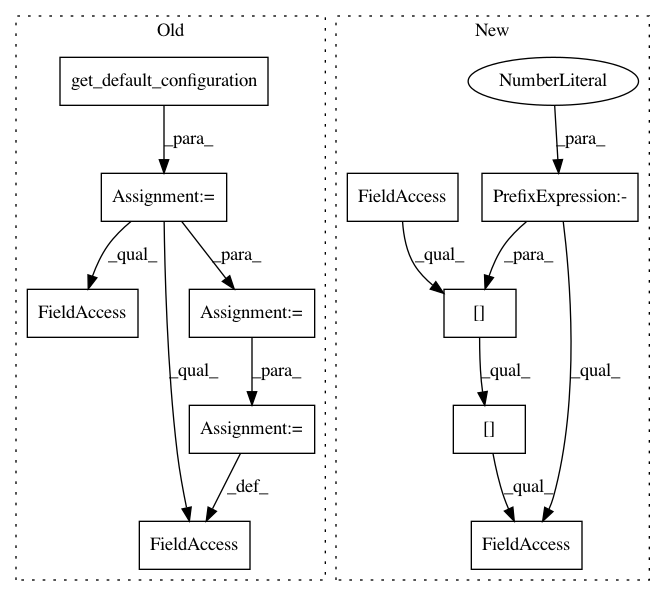

9a62e98e14c1ad88b29baee3e5ba55cb45ac7aec,test/test_pipeline/test_classification.py,SimpleClassificationPipelineTest,test_predict_batched,#SimpleClassificationPipelineTest#,397
Before Change
def test_predict_batched(self):
cs = SimpleClassificationPipeline.get_hyperparameter_search_space()
default = cs.get_default_configuration()
cls = SimpleClassificationPipeline(default)
// Multiclass
X_train, Y_train, X_test, Y_test = get_dataset(dataset="digits")
cls.fit(X_train, Y_train)
X_test_ = X_test.copy()
prediction_ = cls.predict(X_test_)
cls_predict = unittest.mock.Mock(wraps=cls.pipeline_)
cls.pipeline_ = cls_predict
prediction = cls.predict(X_test, batch_size=20)
self.assertEqual((1647,), prediction.shape)
self.assertEqual(83, cls_predict.predict.call_count)
assert_array_almost_equal(prediction_, prediction)
// Multilabel
X_train, Y_train, X_test, Y_test = get_dataset(dataset="digits")
Y_train = np.array(list([(list([1 if i != y else 0 for i in range(10)]))
for y in Y_train]))
cls.fit(X_train, Y_train)
X_test_ = X_test.copy()
prediction_ = cls.predict(X_test_)
cls_predict = unittest.mock.Mock(wraps=cls.pipeline_)
cls.pipeline_ = cls_predict
prediction = cls.predict(X_test, batch_size=20)
self.assertEqual((1647, 10), prediction.shape)
self.assertEqual(83, cls_predict.predict.call_count)
assert_array_almost_equal(prediction_, prediction)
After Change
X_test_ = X_test.copy()
prediction_ = cls.predict_proba(X_test_)
// The object behind the last step in the pipeline
cls_predict = unittest.mock.Mock(wraps=cls.steps[-1][1].predict_proba)
cls.steps[-1][-1].predict_proba = cls_predict
prediction = cls.predict_proba(X_test, batch_size=20)
self.assertEqual((1647, 10), prediction.shape)
In pattern: SUPERPATTERN
Frequency: 3
Non-data size: 11
Instances
Project Name: automl/auto-sklearn
Commit Name: 9a62e98e14c1ad88b29baee3e5ba55cb45ac7aec
Time: 2016-12-31
Author: feurerm@informatik.uni-freiburg.de
File Name: test/test_pipeline/test_classification.py
Class Name: SimpleClassificationPipelineTest
Method Name: test_predict_batched
Project Name: automl/auto-sklearn
Commit Name: 8118fe98fb3c10515476ca49fceef2162a9754af
Time: 2016-07-13
Author: feurerm@informatik.uni-freiburg.de
File Name: test/test_pipeline/test_classification.py
Class Name: SimpleClassificationPipelineTest
Method Name: test_predict_batched
Project Name: automl/auto-sklearn
Commit Name: d39f63e2ded8464e6168d77495816e0fd3ecb885
Time: 2016-07-13
Author: feurerm@informatik.uni-freiburg.de
File Name: test/test_pipeline/test_regression.py
Class Name: SimpleRegressionPipelineTest
Method Name: test_predict_batched